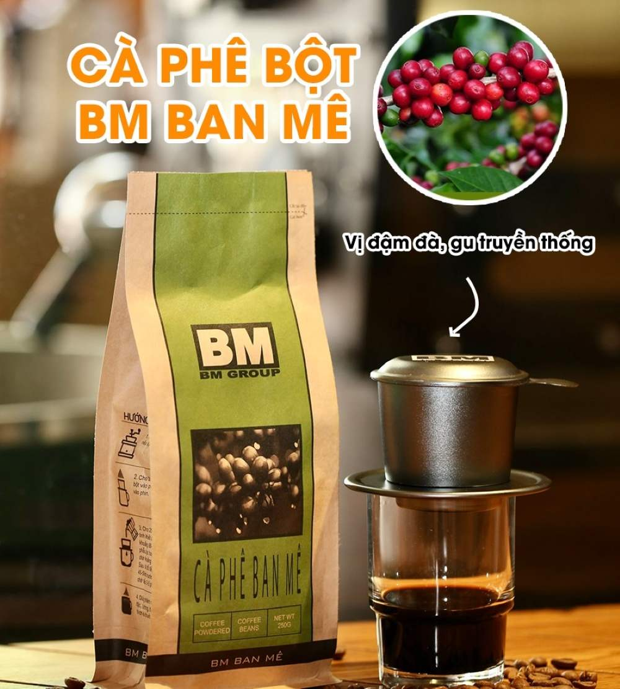
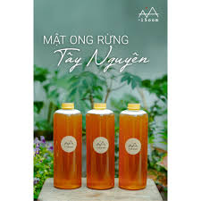
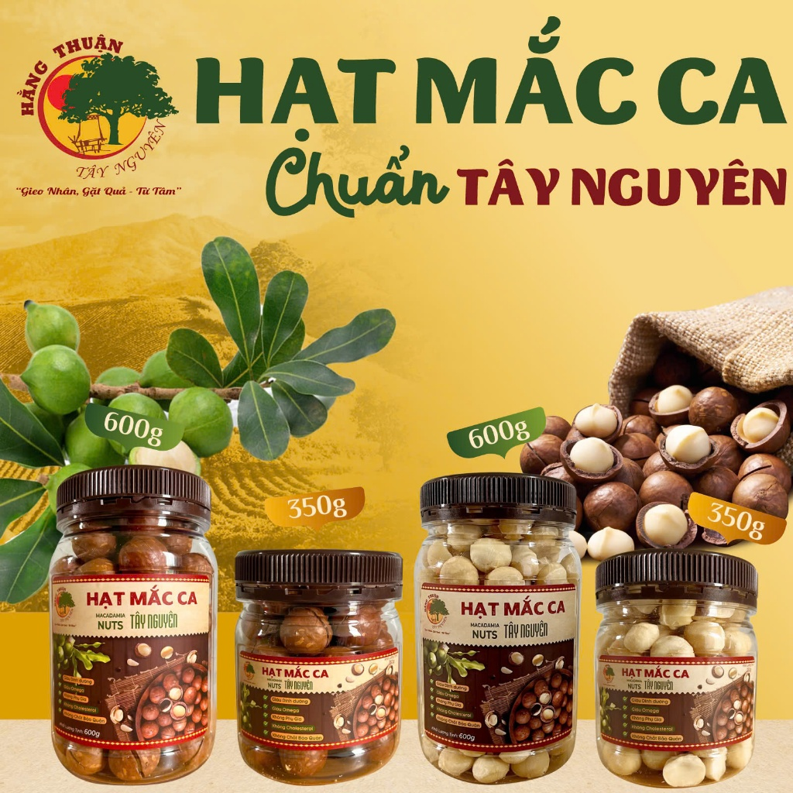

Cà phê Buôn Ma Thuột

Đặc sản nổi tiếng với hương vị đậm đà.
Tinh hoa núi rừng - Hương vị quê hương

Chúng tôi mang đến những sản phẩm chất lượng từ vùng đất cao nguyên giàu bản sắc văn hóa.

Đặc sản nổi tiếng với hương vị đậm đà.

Nguyên chất từ thiên nhiên.

Được chế biến từ hạt Mac ca chất lượng cao.
Tây Nguyên nổi tiếng với văn hóa cồng chiêng, những cánh rừng bạt ngàn và các sản vật độc đáo.